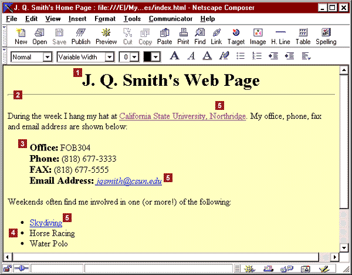

Netscape Composer Demo
Tbis is a test document for Netscape Composer. Netscape Composer was an
HTML Editor released by Netscape in 1997,
initially as part of the Netscape Communicator Suite.

A screenshot of Netscape Composer
Netscape Composer's last stable release was on August 2004, with the
release of Netscape 7.2
The Netscape Composer was succeeded by the Mozilla Composer and later,
the SeaMonkey Composer.